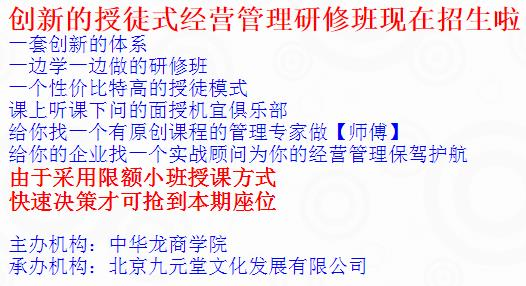

中华龙商学院举办张九元老师授徒式研修班
张九元老师
来源：原创课程 点击:234次
职业生涯：
38年的职业生涯是这样度过的：6年政府公务员，8年大型国企中层管理者，4年小型国企法人代表，3年高校理论研究者，17年咨询公司顾问。
课程简介：
张九元老师是国内最具实力的实战派经营管理专家。他有着不同寻常的人生经历，在政府、企业、高校之间从容游走。
六年政府公务员，八年大型国企中层管理者，四年小型国企法人代表，三年高校理论研究，十八年咨询公司顾问实践。39年的工作经历，使他的课程实战而厚重。18年咨询培训经验，上千场综合管理、国学应用课程培训，已经创造了10万余人次的课程案例，个人辅导案例5000多人，让他在中国培训界享有盛名。
翻开上述张九元老师的简历，我们看到的是一位充满激情，敢于超越的勇者和智者，一位真正厚积薄发的企业经营管理专家。在从事管理和国学培训18年后，第一次推出了他的【授徒式】研修班。他将用实战实用的方法和亲身经历演绎出大道至简的力量。
从业多年，张九元老师始终恪守“进行规范化管理，解决实际问题”的咨询培训理念，他倾心打造的符合企业实际需求的《简约管理》系列培训课程，一经推出，就受到来自清华、北大、中央财大、中山大学、浙江大学、四川大学、福建行政学院等众多高等院校总裁班学员的热烈欢迎和推崇。
张老师为了本次开门授徒，做足了后台的功课，整个春节假期闭门谢客，全面更新了课程体系，大量增加了近三年来的鲜活案例，为这次研修班打下了坚实基础。
这次全新推出的20天系统课程，除了带给你终身受用的知识和能力外，还会带给你同学之间的真情厚谊，使你在自身提高的同时，找到新的合作机会。
课程特色：
1、系统思维。以中国传统文化为指导，结合中国国情、企情、人情创建、设计的课程内容，强调整体和系统的优化。
2、简明实战。以效果为导向，理念和实际紧密结合。帮助高中层管理人员快速、有效地提升自己的含金量，使自己管理的团队绩效得以快速提升，为企业创造更大价值。
3、轻松愉快。以翔实的案例进行分析，实用性、操作性强，并采用教学互动、疑难解答等方式，使学员在轻松地学习中掌握更多的方法、技能。
适合学习的群体：
1、中小企业的老板：经营企业多年，企业发展遇到了瓶颈，再上一个台阶面临困难。渴望突破瓶颈，找到新的商业模式，实现企业的转型升级，进而实现跨越式发展。研修班将带给你全新的思路。
2、中小企业的老总：伴随企业的成长壮大，对经理人的要求也有显著提高，职业生涯遇到挑战，新的形势下如何成为真正意义上的职业经理人成为难以绕开的难题。研修班将给你最新的指引。
3、中小企业接班人：虽然承创业者言传身教，但是却缺乏系统的经营管理知识和技能，对于能否成功接班信心不足。研修班上和毕业之后，导师将一对一地帮你把短板补上。
4、打算自行创业者：市场经济的深入，带来了创业难度的加大，创业时一开始选择很关键。法律法规的不断出台也会带来新的难题。研修班将使你的创业进程加快，不走弯路就等于走了捷径。
5、欲系统学习管理者：企业管理是系统工程，零星知识解决不了系统问题。近些年培训班众多，鱼龙混杂，师资参差不齐，观念凌乱冲突。研修班会带给你自成系统、自圆其说的系统知识和技能。
6、想提升素质的新锐讲师：年轻新锐讲师，一般技巧较佳，但是仅有技巧是不够的。有实践经验的导师可支撑你的高度，拓展你的深度，使你实现跨越式突破，一举跃上一线培训师的高台。
学习收获：
1、树立正确认识事物的思维方式
2、树立系统简约管理的思想体系
3、学习到能融汇中西的管理方法
4、掌握提升工作效率的管理工具
5、研判来自教授的亲身实战案例
6、得到教授一对一的针对性指导
7、学员之间在老师的指导下联谊
8、不同背景的学员之间可以合作
9、中华龙商学院颁发的毕业证书
学习方法：
1、一年20天课程（元旦春节除外），每月上课两天，选在月中的周末，时间得到了保证。
2、授徒式的研修方式，可以跟老师亲密接触并随时提出问题，请导师现场解惑释疑。
3、课下可以针对自身实际情况向老师请教，并得到【问到底】的回答，达到胜读十年书的效果。
4、课后会将学员组成校友俱乐部，让学员之间可以互相学习，取长补短，甚至达成直接的合作。
5、老师将选取成功的往届学员现身说法，跟学弟学妹们分享经验和教训，学会“低空飞行”。
6、资源条件符合的学员，可以参加导师正在运作的项目，在取得经验的同时获得相关的收益。
保障措施：
1、全年一本教材，课件系统连贯，学习笔记完整，既不重复，也没漏项。
2、讲课全程录像，上传商学院网站，缺课学员可以凭密码，看录像补课。
3、此系列课程分期举办，缺课、或者想再听一次的学员可以免费补课。
4、每半年举办一次学员聚会，学员除吃住行和必要的会议费用外，不再收取学费。
5、学员个人课后有问题需要单独和老师电话、邮件交流，不再另外收取费用。
6、学员之间的合作有了难题时，老师可以协助解决，使合作成功多了一层保障。